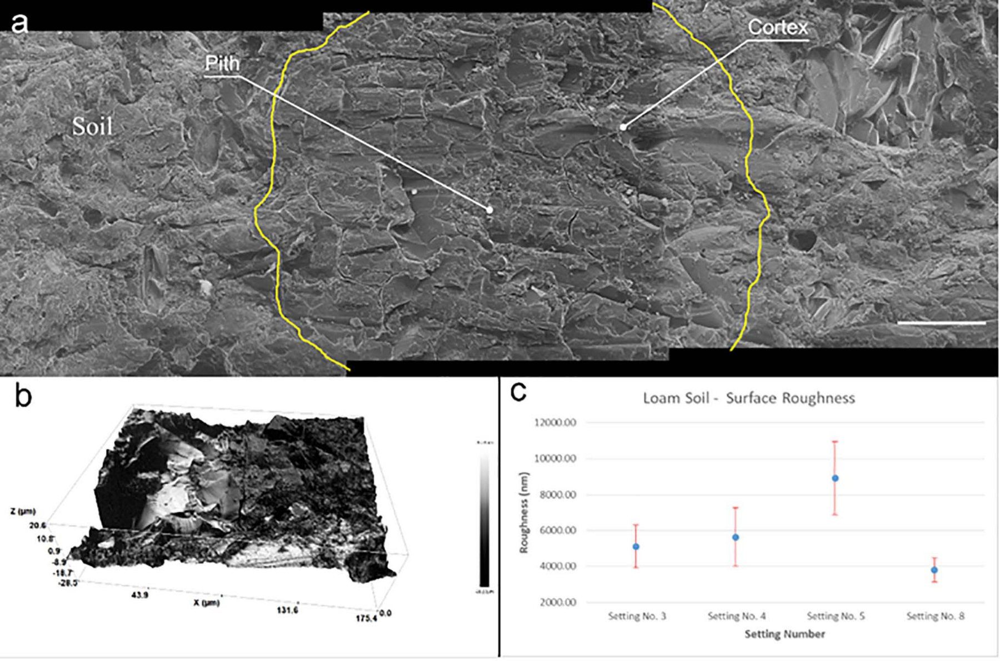

Documenter les organismes, les matières et les conditions expérimentales.
Observer les systèmes vivants · Du microscopique au terrain
Le vivant
en relation.
Comprendre les organismes, les matériaux et les milieux. Relier la recherche biologique à des procédés concrets, documentés et adaptés aux réalités du terrain.

01 / ORGANISMESMycologieCulture, morphologie, fonctions fongiques.02 / INTERACTIONSMicrobiologieMicroorganismes, cultures et milieux.03 / MILIEUXSol & environnementRessources, eau, substrats et vivant.04 / PROCÉDÉSBiotechnologiesDu protocole au procédé reproductible.
Recherche appliquée · Sétif, AlgérieLa matière vivante comme point de départPrototype A / 01
Carnet de recherche · Algérie
Du labo
au terrain.
Une recherche ancrée dans les matières, les organismes et les conditions réelles. Des observations, des essais et des applications présentés sans confondre hypothèse et résultat.
Parcourir le carnet ↗
ÉCHANTILLON : SOL & MATIÈRE
DOCUMENTATION VISUELLE
Observer le milieu.STRUCTURE · MATIÈRE · INTERACTIONS
Comparer les protocoles, suivre les paramètres et conserver les limites observées.
Relier les résultats aux usages agricoles, environnementaux et industriels.
Une démarche située. Sétif, Algérie — recherche appliquée et ingénierie frugale.Prototype B / 02
Applied biology / Frugal engineering
Science,
mise en œuvre.
Des systèmes biologiques aux procédés expérimentaux. Une plateforme de recherche qui relie observation, instrumentation, données et applications.
Explorer les systèmes ↗Architecture de principe / cycle expérimentalSchéma 001
SYS.01MicrobiologieOrganismes & interactions
SYS.02BioprocédésCultures & transformations
SYS.03InstrumentationMesure & contrôle
SYS.04EnvironnementSol, eau & ressources
Note : schéma conceptuel destiné à illustrer la démarche de recherche. Il ne représente pas un équipement commercialisé ni un procédé validé.